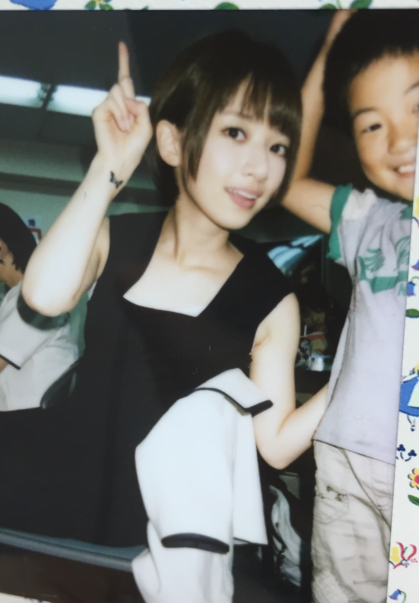

| 2015/07 31 Fri | めっちゃ長いよ、、、 |
こんにちは！
いつの間に夏が来てました。いつの間にか梅雨が明けてました。今年はなぜか梅雨が短く感じました。実際例年に比べてどうだったのかな？
わたしクーラー苦手なんだって東京で4年暮らしてようやく気が付いた(@_@)
北海道はクーラーがない家が多い気がするよ。わたしの実家も扇風機のみで夏を余裕で越せていた、、、
なんと恵まれた気候だこと。北海道しか知らない18までの私はそのありがたみに気付いていなかった(@_@)
そんな18の頃は、こんなクーラーがどうだとかの話をたくさんの人に見てもらうべくブログを書くことになるとも思ってなかったし、自分がMステに出ることになるなんて微塵も考えなかったよ、、、
はい、先週のMステ、、、
豪華すぎてわたしの頭パンクしました、、、
MUSEのインスタに登場してしまった、、、！！！
ねぇみんな見た！？
すごい、、、ありがとうございました、、、！！！
かっこよかった、、、目が合うとウインクしてくれたり、手を振ってくれるの！笑
紳士というか、日本人にはないコミュニケーションだった！むしろこれが日本に浸透することはないだろうなと本物を見るとますます思った！
だってウインクされてもどう返すのが正解なのか分からないんだもん！
そのユーモアがわたしにはない！嬉しい気持ちになって終わっちゃう！
海外の会話やそういう部分のユーモアセンスが羨ましい！
その代わりに日本には侘び寂びがあるのか！
でもわたしには侘び寂びもない！笑
そしてキュウソネコカミさん、、、！
ご一緒できて嬉しかった（ ｉ _ ｉ ）！！
図々しくも曲フリ前のトークまでさせて頂きました、、、！
だいすきなアーティストさんの初Mステに立ち会えてとても光栄でした（ ｉ _ ｉ ）
MEGA SHAKE IT！たのしい！！！
そうそう、Mステのリハーサルでスタッフさんと打ち合わせしてるとき
「橋本さんはキュウソネコカミさんのどんなところが好きなんですか？」
って聞かれたんだけど、好きなものや好きなことの魅力を人に分かりやすく、どこに自分が惹かれてるかを明確に答えるのってすごく難しい！
めちゃくちゃ好きな気持ちはあるんだけど、それを人に伝えるのはすごく難しい！
自分が仮にここが良いと思います！と言えたとしても、他の人は全く別のところに惹かれていることもあるし、
自分がここ！と言ってしまったことによってそこに目がいって、本来もっとその人にとってのキャッチーな部分に気付かない
っていうこともあるかもしれない
考えすぎなのかもしれないけど、好きなものが好きであるほど好きということにすごく責任を感じる！
でもそれを世の中にキャッチーに売り出していくメディアってすごいな！選別眼というのか！
よろしくお願いします！笑
見てくれてますか？初森ベマーズ！
カアチャンが、トンキチとポラ撮ってくれた！ヾ(｡･ω･｡)
トンキチ半分（ ｉ _ ｉ ）笑

トンキチもチヨちゃんもかわいい、癒しだよ本当にもうかわいい二人ともすごく人懐っこくて愛してるカワイイ、、、(o_o)

魚たちのLOVE SONG
人気で嬉しいですヾ(｡･ω･｡)
明日の全握ミニライブでもやるぜ！おたのしみに！
ということで先週末は京都！今週末は名古屋！
京都にきてくれたみんなありがとうー！！！
名古屋は明日明後日よろしくー！！！
わたしはそろそろ寝る！おやすみ！！！
あ！！
今日BUBKA発売です！表紙とグラビアやってます！
グラビアいい感じになってると思います！カメラマンは我らが細井さん！！
みてねヾ(｡･ω･｡)
あ！！笑
写真集、タイトル決まりました！
やさしい棘 だってー！！！
なんか詩的でオシャレな感じだよね！ハードル上がってる気がする！笑
こちらもチラッとみたんだけど、、、今の私を撮ってくれてるなあって感じです！よろしくお願いしますヾ(｡･ω･｡)
おやすみ！！！笑
コメント(1930)
2015/07/31 23:54